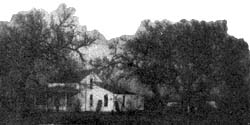
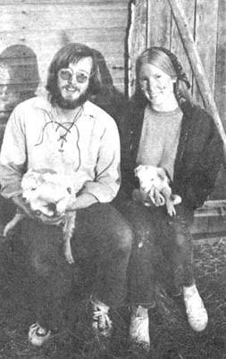
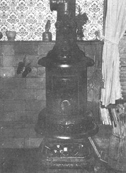

So many of the letters to MOTHER seem to be from folks who are "going to" move back to the land that we feel like standing up and shouting, "There's only one time to do it . . . and that's NOW!"
If you're sitting in some 2 x 4 apartment trying to get the bread together for that farm you want, you're probably wasting time. You aren't any better off than the fellow who goes to the office every day thinking about the new car he's going to buy. You're both chasing after the same damn carrot, whether it looks like a farm or a new car or a trip to Europe . . . and it's a TRAP!
The U.S. dollar is not where it's at. Money is just The Man's way of keeping you where he needs you. It's an elusive and a pseudo "security".
The only things that are really yours are your knowledge and your skills. That's the stash you should be working on if you intend to make it for the rest of your life in the boonies. It's far more important than a fat bank account or the title to a farm you have no idea how to work. If you've spent your whole life in the city, why not get out now and start learning what's involved in country living? Get your skills and tools together. You'll never figure it all out by riding a subway.
Think about this: do you really need to own a farm? If so, why not save for it while you're living in the the country on "temporary" land? Why not try not "squatting". or renting' in an area you like before you decide to buy? Besides, do you even know what kind of farm you really want? Have you carefully, thought out what you want to grow and what kind of soil you'll need to do it? Do you know enough not to buy 180 acres of cow pasture if you're a vegetarian. If not, we say to get out of that city now and start checking out different operations. Take that first step and the next one will come along when you're ready it.
Farmhouses and small acreages are available "for the living" in most rural areas. In Kansas, where we're located, large farmers and corporations continue to buy up land and combine several smaller farms info one huge one. The leftover buildings usually aren't wanted and aren't torn down . . . they're just left fall apart. Renting a set of such structure.. found, can be both cheap and easy.
"Our" rented two acres has a sturdy house; chicken coop and wandering rights on a couple hundred acres . . . all for only $30.00 a month. And no matter what the legalities state, right now it's our farm.
And once you've rented in an area long enough to get acquainted and decide that you want to settle there for good, you should have an insider's feel for all the bargain farms in the region. We recently listened in amazement as a beautiful 100-year-old modernized five-bedroom house, two barns, a pond and 20 acres sold at an auction for $8,000. At another sale (these weren't tax auctions, either . . . the owners just got old and decided to move into town) we saw a new home with barns, a heated garage-workshop and 10 acres go for $7,500. We've seen enough such bargain in the last few months to know that they aren't too rare.
Living expenses? We moved here with $75 in our pocket, a few boxes of books and our trusty VW bus. Two days after locating on our "homestead" we bought a stove, refrigerator, two beds and a couch for less than $20 from people in the vicinity. We then attended every farm auction in the area and added five roomfuls of good furniture (including a beautiful potbellied stove for an outrageously low $5.00!) for a total cost of $40. We got all our household goods (like a box of dishes, pans and utensils for 25 cents) at nominal cost.
It doesn't cost us much to eat well, either. We grow our own vegetables and our chickens provide enough eggs for us and our friends. We buy stone ground flour for 10 cents/lb., get 100-lb. bags of wheat germ for $6.00 at the mill, purchase honey locally for $3.50/gallon and buy beef and lamb "on the hoof" and butcher them ourselves at great savings. Right now we enjoy Grade A raw milk for 60 cents a gallon and our goats will soon freshen to give us our own milk and cheese.
Jobs? After suffering through a year of unpleasant, but acceptable, working situations-ditch digging, oil field work, directing a pre-school in connection with the hideous Head Start program-we both have work we love. I put in 20 hours a week as the society, sports and feature writer-editor of the small, local weekly newspaper and Tom-as a VW "specialist"-rebuilds engines on a contract basis with a nearby garage. I had no previous experience as a journalist nor Tom as a mechanic (other than on our own bus).
Most folks trying to change their way of living seem to want to settle in an area of good, gentle people. Well, doesn't any rural area have that naturally? Our new-made friends and nieghbors (none under 30, radical or unprejudiced in all ways) are fantastic! We've got more to learn from them than we can soak up in many years . . . and it's knowledge they're more than willing to impart. Our new country kinsmen seem quite pleased to help us "book farmers" whenever they can . . . with the option, of course, of laughing at our inept ways.
We've been plowed out of snowstorms and taught to make cider, spin wool, tan hides (excellent bartering items), garden organically (a term the locals laugh at . . . most of them have always done it that way) and do many other things. Good, gentle people, then, aren't just city folk under 25 who've recently discovered the joys of rural living. We may hate to admit it, but some folks have known where it's at all along . . . and never left the country in the first place.
Then again, people do leave the country all the time . . . mostly youngsters under 30 who go to the big city (to make money!). You can use that situation to your advantage, however, since no community is complete without young people. If you're under 30 and moving to a rural area, it's a sure bet you'll find some fairy godparents-older folks whose children have left home-who are more than willing to lavish their knowledge and love on you, their substitute "family".
And while we're giving you the pitch on rural living, we wonder why Kansas is so rarely considered as an acceptable homesteading location? Judging from our experience and from articles in MOTHER, Kansas seems to be one of the most reasonable areas of all when it comes to stretching a dollar down on the ole family farmstead. We operate quite nicely with the boosts we get from scrap lumber, old rolls of fence, abundant already-knocked-down trees for firewood and endless other goodies from abandoned farmhouses, dumps and neighbors' barns.
Kansas soil is excellent for growing most everything. The land is naturally cleared and ready to go although-contrary to popular belief-we do have plenty of trees, creeks and even woods. The weather here is variable (something for everyone) and generally very pleasant with a long growing season.
Of course, if you're on your way to the Rockies and only want to see mountains, Kansas is gonna look a mite flat . . . but you've missed a lot if you've never watched miles of golden wheat waving under the sun or sat through the kind of thunderstorm that is equaled only on the open sea.
At any rate, Kansas or not, our message is DO IT NOW . . . or it might never happen. It's not hard. In fact, making the transition is so much easier than coping with the city that we can't understand why anyone is still playing that game!
Moving back to the land on a shoestring is so much fun too. If we had had money we might never have discovered farm auctions (shudder!), we wouldn't have learned the best and least expensive ways to feed ourselves, we'd never have been taught so many things and figured out others on our own. And most of all, we might never have met all the good folks who've taught us the true meaning of the word "neighbor".
DO IT NOW.
|
 |
 |
 |